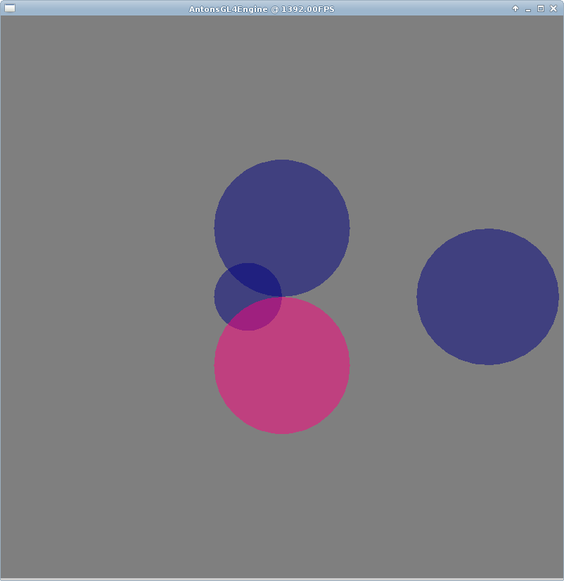

[index]
Anton's Research Ramblings
9 July 2012
Open-Source Releases.
Well, I've got a lot done over the weekend. I had some interest in my WebGL 3D model portfolio tool, so I
created a GitHub account and open-sourced it. I also open-sourced the tool that I made to convert .obj files to a
use-able .json format.
3D Mouse Picking with Ray Casting
Well, I got this working properly. It was easier than I thought. I should have gone with my first hunch (the one
that I scribbled down on paper in an earlier post). I got totally misinformed by the Internet (again). I think this
exercise makes a really good introduction to 3D programming in general, so I will make a tutorial explaining this
demo on my
OpenGL4 tutorials wiki.

I create a ray from the mouse pointer's x and y pixel coordinates, and project it into world space. Here I am
testing it against spheres. All are the same size, but one is farther in the distance - this lets me make sure
that the closest sphere is selected if 2 spheres are along the path of the ray. I update a uniform variable that
makes the currently selected sphere appear pink. EDIT: don't try clicking on this, it's just an image.
hahaha.
To dis-spell some Intertubes mis-information,
this
is how to do 3D ray picking:
You can use any of the various intersection tests with the ray. I used ray vs. sphere in my demo. That bit is fairly
straight-forward.
Book Review - "WebGL Beginners Guide"

On Friday I received a copy of the WebGL Beginners Guide. It's written by Diego Cantor and Brandon Jones. I've been
looking forward to this book because I've been following Brandon's excellent WebGL demos/blog. I first got started with WebGL a few months ago, and there
were no books at all. Official documentation for GL-related things is typically fairly unhelpful, so I was dying for
a decent book.
Edit: I just wrote a giant review and the web proxy here ate it. ARGH! Short version:
The bad:
It's a bit short. It took only a work day day to read it all. The authors skip a lot of things that
they really ought to have discussed by just giving the reader a link to a demo. :-/ The 3D programming theory is a
bit dubious in places - index buffers are used without a good explanation of when not to use them, normals are
always smoothed without any discussion of when not to smooth them. An entire chapter is dedicated to transparency
with depth writing turned off. I can't help but think that this is a bit of a misconception - you just don't need to
do this in practice to get decent transparency. There's no discussion of shadows at all - but this could be because
there wasn't proper support for them at the time of writing http://blog.tojicode.com/2012/07/using-webgldepthtexture.html.
Proper animation (hardware skinning, morph targets, etc.) is totally avoided.
The good:
This book would be excellent for someone just starting on WebGL. Don't read the [misleading] web
tutorials - just go straight to this book. It also explains basic Javascript and how to read and write objects with
JSON and AJAX properly. There's a chapter of mouse picking using a colour buffer :-D. There's a whole chapter on
post-processing effects. Gold star for that. The author's do not explicitly explain it as well as they could, but
they do tell you how to properly use vertex pointers (and enable them) in WebGL, which I found very frustrating to
figure out compared to OpenGL4's Vertex Attribute Objects.
Would have benefited from:
A discussion of debugging techniques, diagnosing problems, and optimisations. A "Common Mistakes"
chapter would have been great. A discussion chapter at the end was missing - what are the up-and-coming features to
watch out for? What are the limitations? What should we (currently) avoid doing with WebGL? Will there be
commercialised WebGL app stores or games? A deferred rendering chapter. Web Workers were mentioned - but a chapter
on them would be great.
Overall:
It's definitely not going to show you how to "Become a master of 3D", as the tag-line claims but it's
the only book out there at the moment. It feels a bit rushed, but perhaps it was better to get something out now,
than something more substantial out in 6 months! It's a good start for a hobbyist. Not enough to use as a classroom
textbook. It will almost get you fully around some of the more annoying traps in the API. There are one or two
rather valuable chapters (mouse picking, deferred rendering, ray-tracing in fragment shaders).
I will have a go at implementing the mouse picking chapter tomorrow as I've just finished making a ray casting
picker.